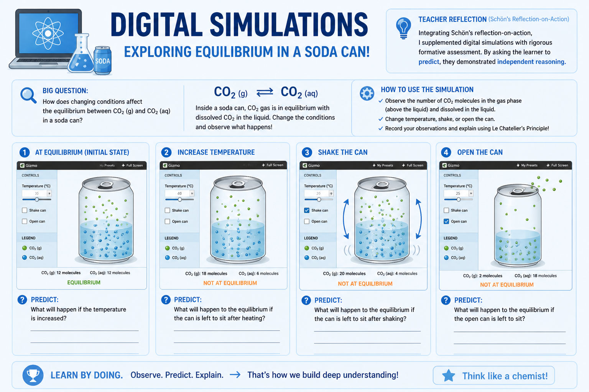
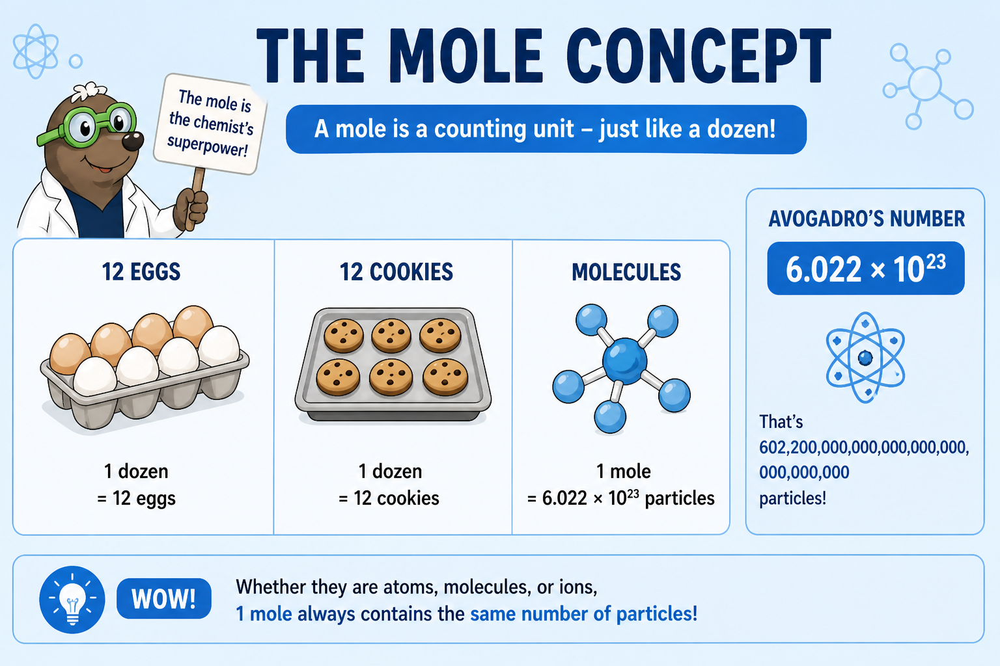
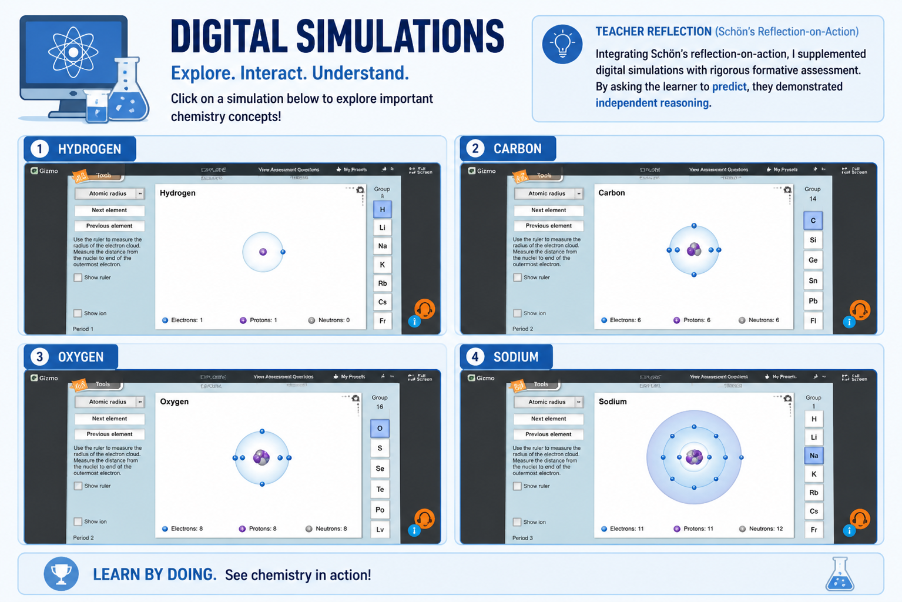

A critical evaluation of my professional growth trajectory moving from surface level EdTech implementation to mastering pedagogical cognitive mapping.
The initial phase revealed a crucial discrepancy. While the learner demonstrated an emerging understanding by connecting physical concepts like evaporation to real life phenomena the depth was absent. The reliance on digital aesthetics masked a fundamental inability to articulate the underlying microscopic scientific principles governing those physical changes.


The most profound moment of reflection in action. When the learner perfectly executed numerical mole equations but failed entirely to explain the physical meaning of the formula the illusion broke. It became terrifyingly evident that rapid digital engagement can seamlessly hide massive gaps in conceptual understanding serving as a crutch for surface level rote memorization.
Integrating rigorous reflection on action the methodology pivoted entirely. Digital simulations were stripped of their primary instructional power and relegated to visual aids. The requirement for the learner to verbally defend, predict and explain reasoning before manipulating the simulation ignited genuine deep cognitive processing.

This deep study has completely changed how I see myself as a teacher. The biggest learning for me is that technology on its own is not enough without a teacher guiding it properly. Digital tools are great for keeping students interested but they don't guarantee that a student has actually understood the topic unless the teacher pushes them to think and explain their answers.
Going forward whether I am teaching online or in a real classroom I will make a clear difference between just doing an activity and actual learning. Interactive tools, simulations and games will only be used to help students visualize concepts. The real test of their learning will always happen during the detailed question and answer discussions that follow. By constantly checking their understanding and clearing their doubts I want to make sure that my students are not just clicking the correct options but actually understanding the real chemistry behind them.
This YouTube Short serves as the foundational visual anchor for the Soda Can Experiment used to diagnose intuitive gas law understanding before mathematical introduction.
▶ Watch Experiment OverviewA comprehensive video breakdown showcasing the integration of digital modeling tools to map the periodic table structurally rather than through rote memorization.
▶ Watch Simulation Walkthrough